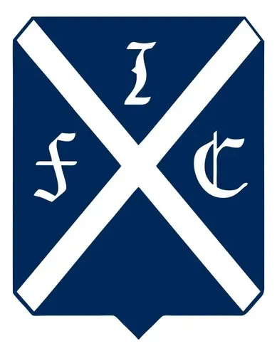
Primer escudo del club.
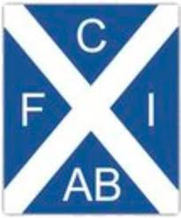
Diseño utilizado durante el amateurismo.
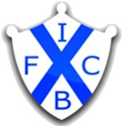
Diseño utilizado durante el amateurismo.
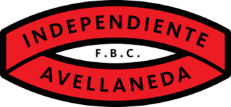
Primera vez que aparece el color rojo en el escudo.
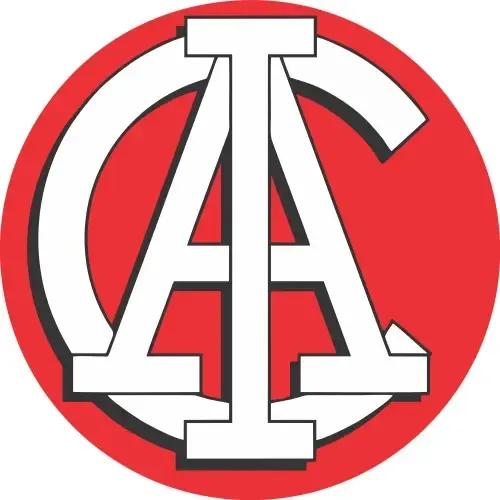
Diseño utilizado durante el amateurismo.
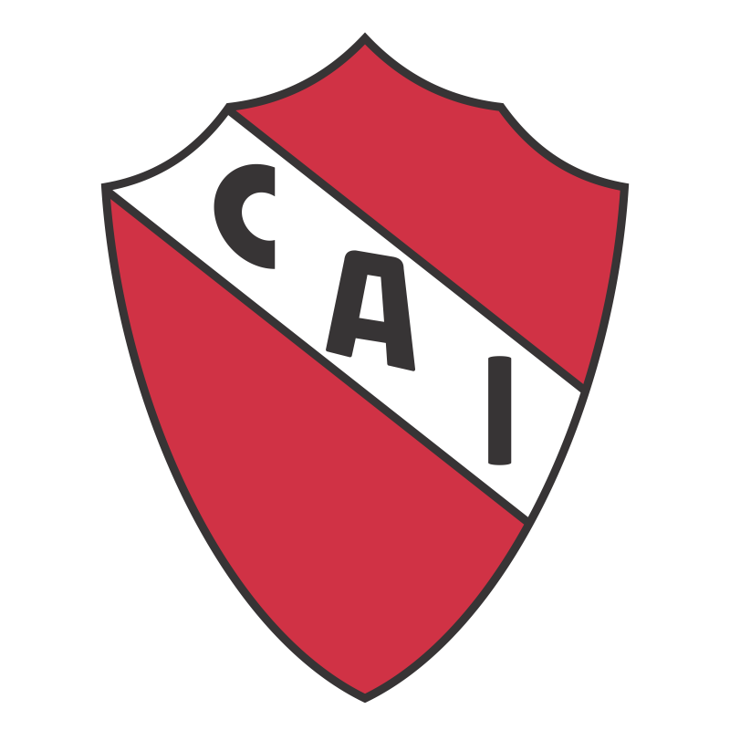
Etapa inicial del profesionalismo.
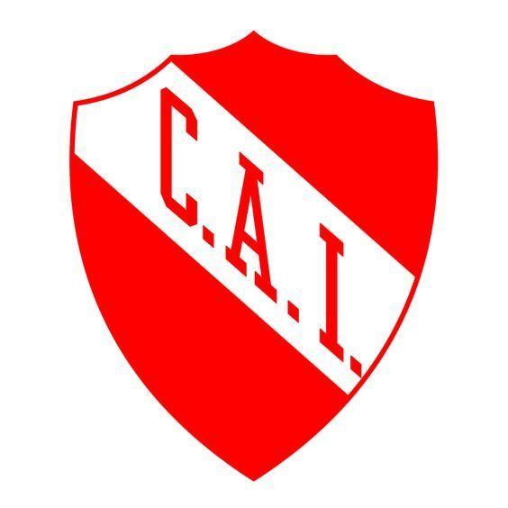
Versión utilizada en la década del 50.
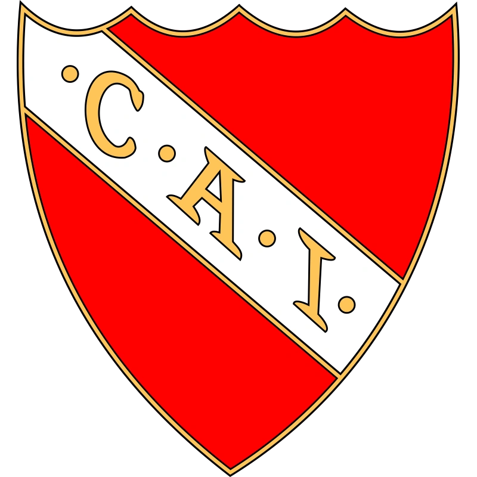
Primer Escudo de la época dorada.
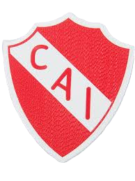
Segundo Escudo de la época dorada.
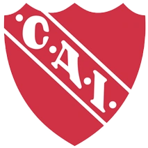
Utilizado durante la obtención de la Libertadores e Intercontinental 1984.
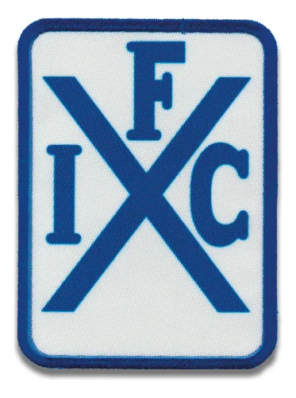
Guiño a los inicios.
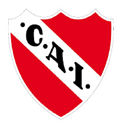
Acercamiento al escudo actual.
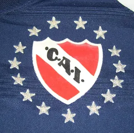
Escudo del comienzo del siglo XXI.
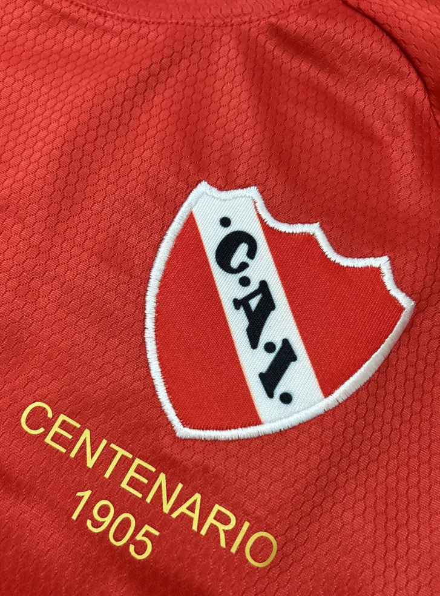
Versión especial del Centenario.
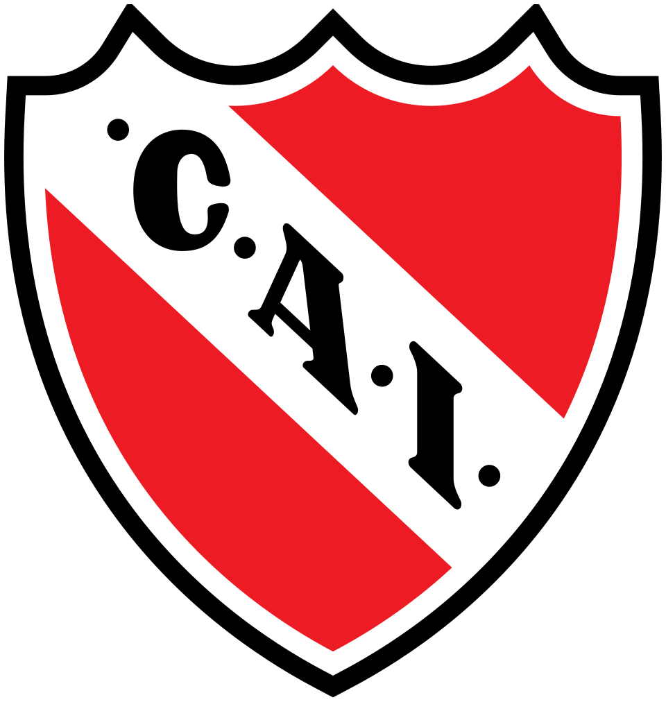
Escudo oficial vigente.